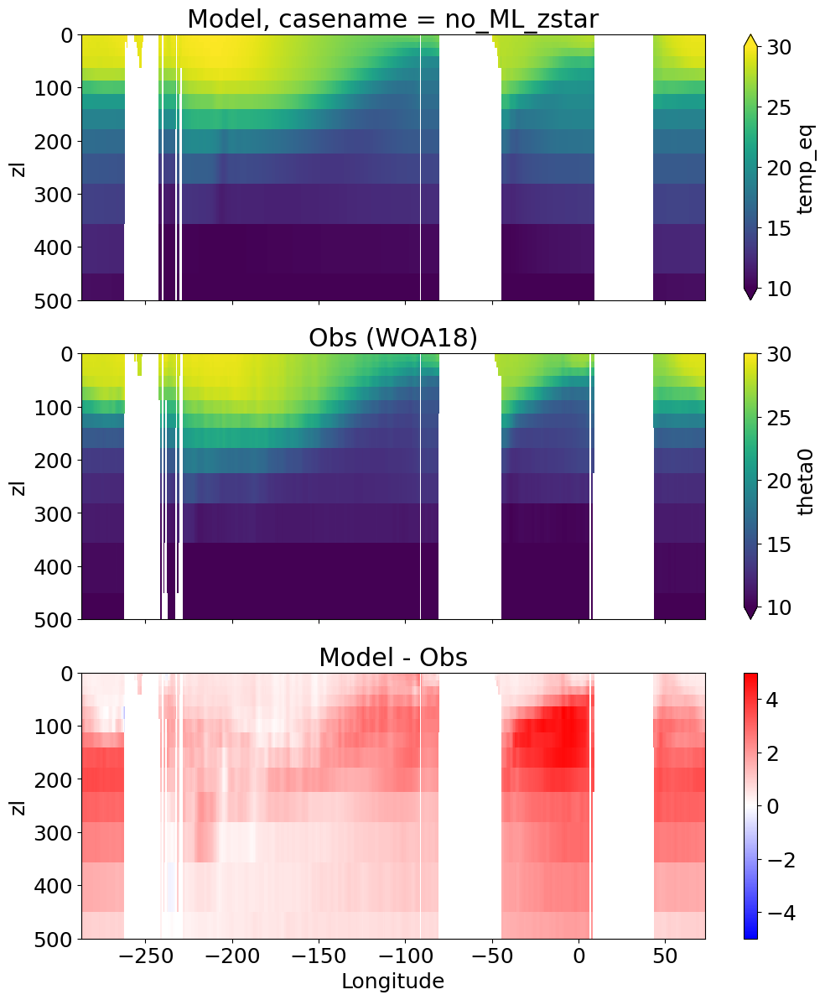
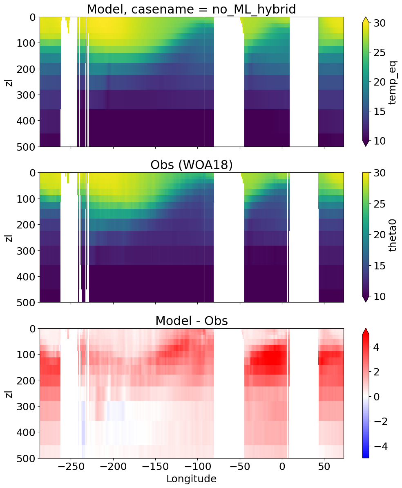
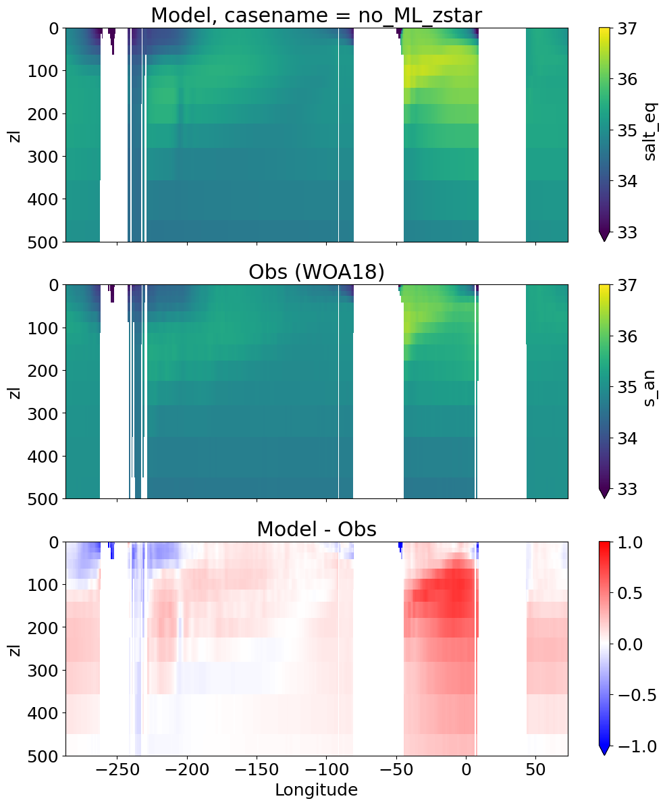
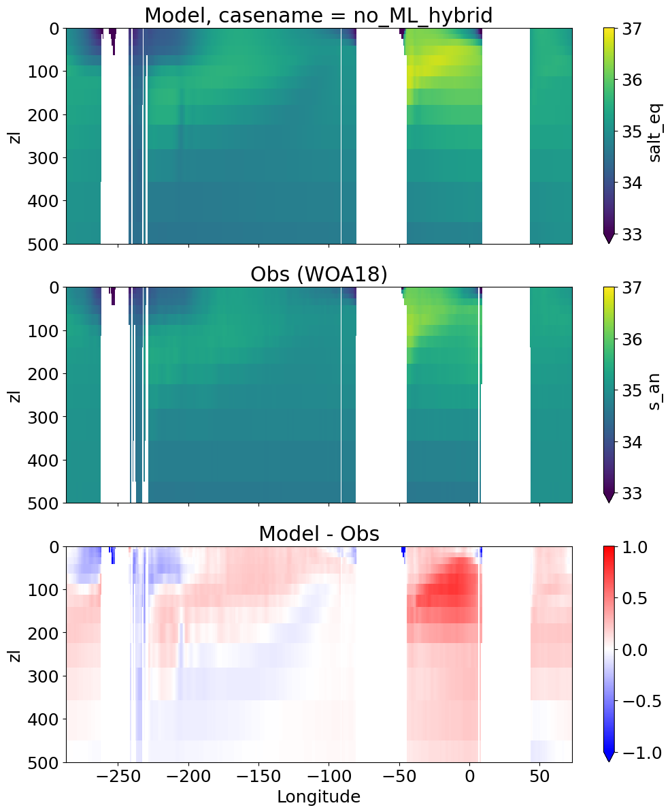

Equatorial plots#
%%capture
# comment above line to see details about the run(s) displayed
from misc import *
%matplotlib inline
# empty parametrizable cell
cluster_scheduler_address = None
obs_path = None
obs_suffix = None
# Parameters
not_casename = "placeholder-casename"
obs_path = "/glade/u/home/gmarques/Notebooks/CESM_MOM6/WOA18_remapping/"
obs_suffix = "_tx0.66v1_34lev_ann_avg.nc"
subset_kwargs = {}
Connecting to cluster#
from dask.distributed import Client
if cluster_scheduler_address is None:
pass
else:
client = Client(cluster_scheduler_address)
client
# load WOA18 data
obs_temp = xr.open_dataset(obs_path+'WOA18_TEMP'+obs_suffix, decode_times=False)
obs_salt = xr.open_dataset(obs_path+'WOA18_SALT'+obs_suffix, decode_times=False)
# get theta and salt and rename coordinates to be the same as the model's
thetao_obs = obs_temp.theta0.rename({'z_l': 'zl'});
salt_obs = obs_salt.s_an.rename({'z_l': 'zl'});
salt_obs['yh'] = grd.yh
thetao_obs['yh'] = grd.yh
def plot_comparison(model, var, obs, vmin, vmax, diff, cname):
fig, ax = plt.subplots(nrows=3, ncols=1,
sharex=True,sharey=True,
figsize=(12,14))
ax1 = ax.flatten()
model[var].plot(ax=ax1[0], ylim=(500,0),
y="zl",vmin=vmin, vmax=vmax,
yincrease=False);
obs.sel(yh=0.,
method="nearest").plot(ax=ax1[1], ylim=(500, 0),
y="zl",vmin=vmin, vmax=vmax,
yincrease=False);
(model[var] - obs.sel(yh=0.,
method="nearest")).plot(ax=ax1[2], ylim=(500, 0),
y="zl", cmap="bwr", vmin=-diff, vmax=diff,
yincrease=False);
ax[0].set_title('Model, casename = {}'.format(cname)); ax[0].set_xlabel('')
ax[1].set_title('Obs (WOA18)'); ax[1].set_xlabel('')
ax[2].set_title('Model - Obs'); ax[2].set_xlabel('Longitude');
return
Potential temperature#
for path, case, i in zip(ocn_path, casename, range(len(casename))):
ds_temp = xr.open_dataset(ocn_path[i]+casename[i]+'_temp_eq.nc')
plot_comparison(ds_temp,'temp_eq',thetao_obs,10,30,5,label[i])


Salinity#
for path, case, i in zip(ocn_path, casename, range(len(casename))):
ds_salt = xr.open_dataset(ocn_path[i]+casename[i]+'_salt_eq.nc')
plot_comparison(ds_salt,'salt_eq',salt_obs,33,37,1,label[i])

